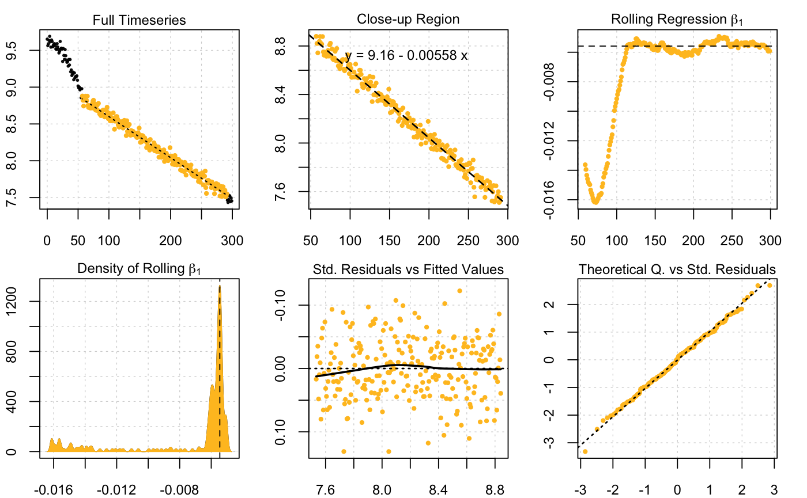
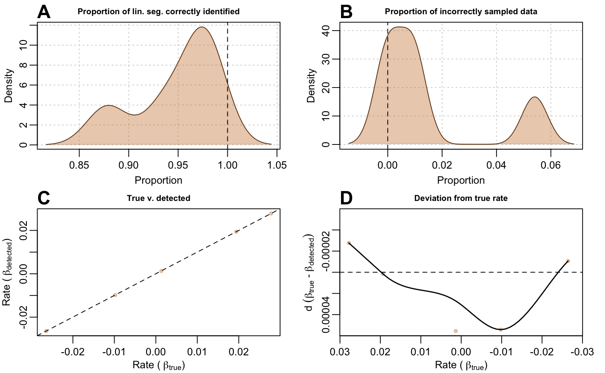
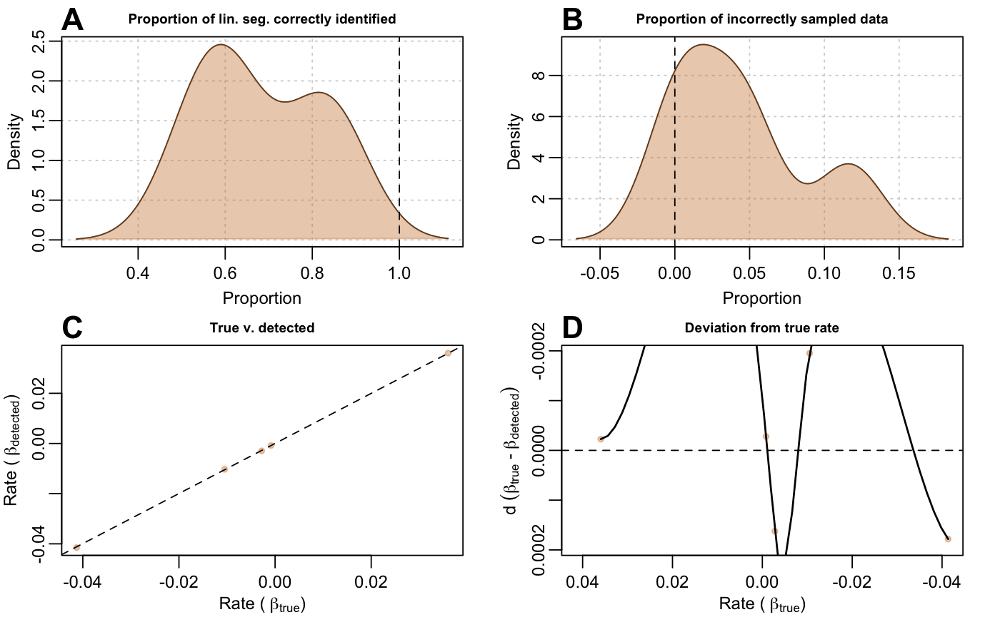

Perform auto_rate() iteratively and extract performance metrics
Randomly generate a dataset and runs auto_rate() on the data to detect
linear regions (with method = "linear"). This is an internal function not
meant for public use. The function plots 4 exploratory graphs and outputs the
results of a linear regression between detected rate and true (known) rate,
which can demonstrate how much the function is able to predict true rate.
test_lin(reps = 1, len = 300, sd = 0.05, type = "default", preview = FALSE, plot = FALSE)
Arguments
| reps | numeric. Number of times to iterate |
|---|---|
| len | numeric. Length (number of observations) of the dataset to test
|
| sd | numeric. Noise to add to the data. Defaults to .05 standard difference. |
| type | character. Use "default", "corrupted" or "segmented" to pick one of the three different kinds of data to generate. |
| preview | logical. This will show the randomly-generated data in your plot window at every iteration. Note: will slow the function down. Useful to see the shape of the data. Defaults to FALSE. |
| plot | logical. This will show the diagnostic plots of |
Value
An object of class test_lin. Contains linear regressin results, and
data required to plot diagnostics.
Examples
# run using default values: test_lin(plot = TRUE)#>#> $df #> real measured length_line length_incorrect length_detected #> 1 -0.005616299 -0.005583545 239 4 231 #> #> $results #> #> Call: #> lm(formula = real ~ measured, data = df) #> #> Coefficients: #> (Intercept) measured #> -0.005616 NA #> #> #> attr(,"class") #> [1] "test_lin"# run 5 iterations (please run at least 1000 times for more reliable visuals) x <- test_lin(reps = 5)#>#>#>#>#>plot(x)plot(x, "a") # view only plot "A"plot(x, "d") # view only plot "D". You know what to do (for other plots)..# run using randomly-generated "corrupted" datasets x <- test_lin(reps = 5, type = "corrupted")#>#>#>#>#>plot(x)